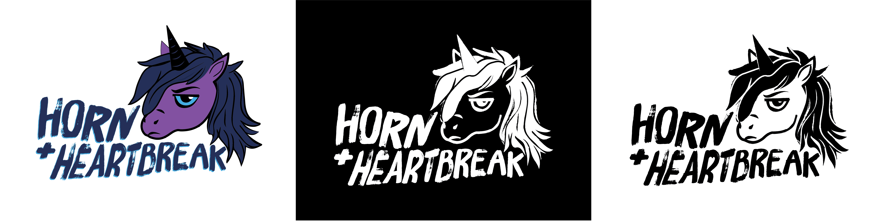
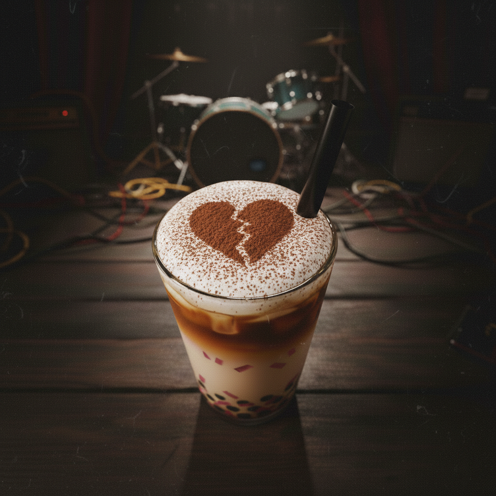
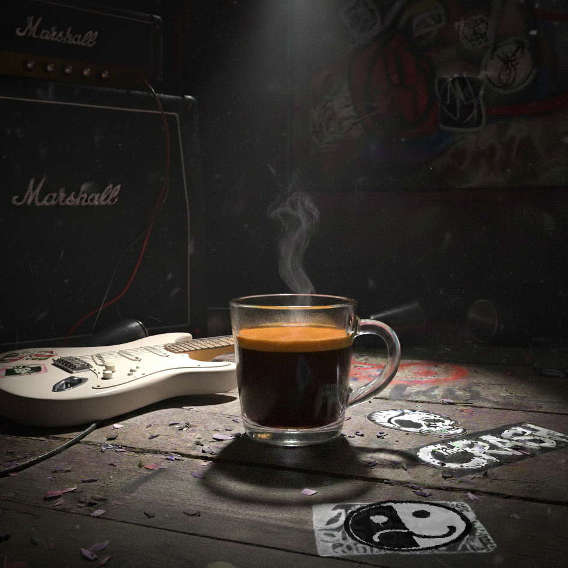
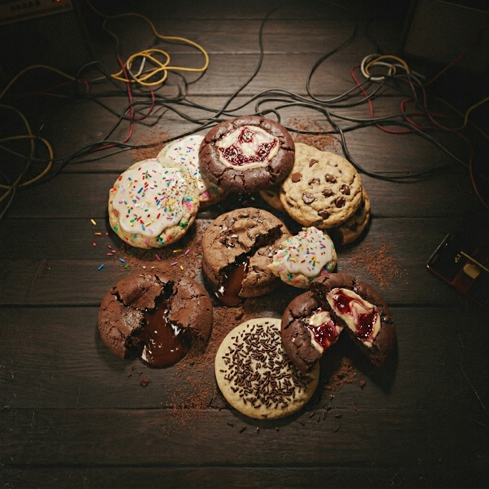
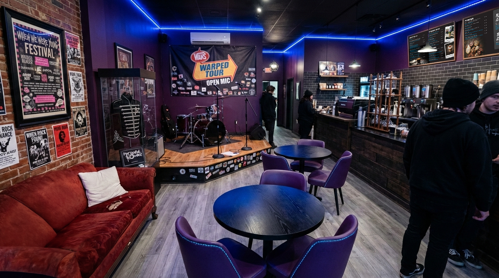
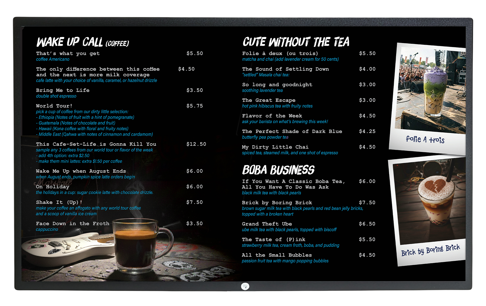
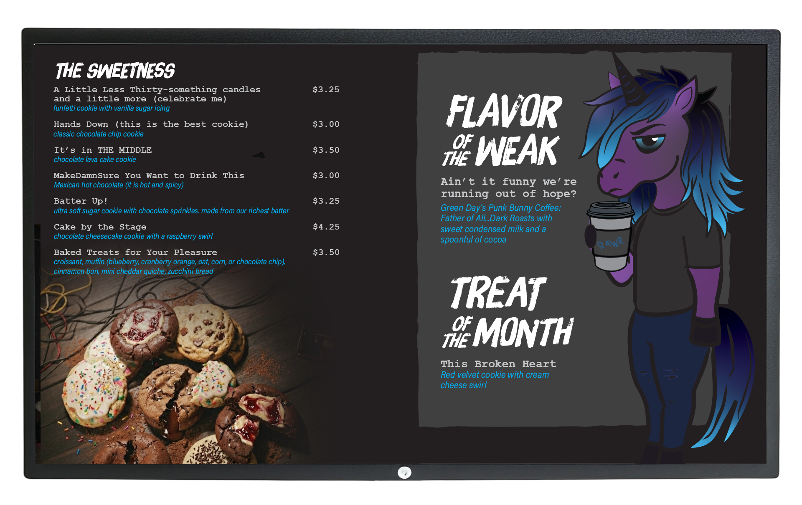
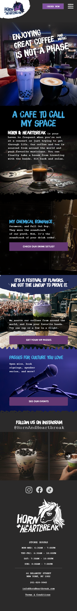
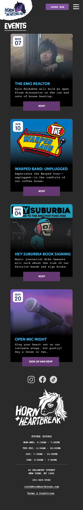
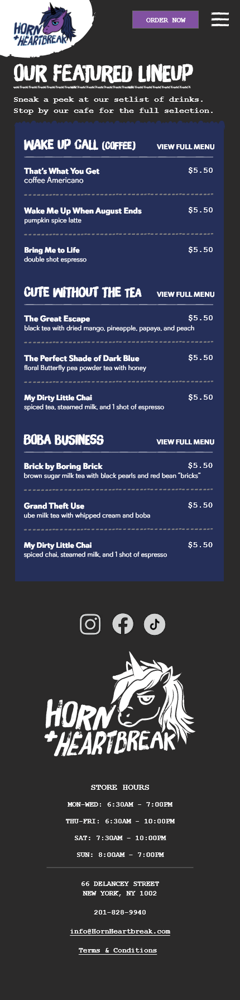

Logo Design
LockupThe goal was to utilize the unicorn in as ways as possible, including the logo. I isolated the head and simplified the colors. For the font, it's reminiscent of pop-punk and emo band logos.

Brand Typography
4 families · 7 rolesFour fonts are in the lineup, each doing one job. Brush Up is the singer that screams — show-flyer energy, used for the unicorn lockup, menu screens, and the largest hand-lettered moments. Bad Dog is the Polaroid scrawl — handwritten-feeling photo captions tucked under show shots and gallery images. Davis Sans is the workhorse — wayfinding, signage, and all primary brand communications. Courier New is the receipt voice — menus, prices, and body copy that should feel printed on cheap paper at the show.
Brush Up
DisplayWeights 500
Source Adobe Fonts
Expressive headlines, menu boards, lyric callouts, the unicorn lockup.
Bad Dog
AccentWeights 400
Source Adobe Fonts
Photo captions throughout the brand — Polaroid-pen scrawls under show shots and gallery images.
Davis Sans
PrimaryWeights 400 · 700 · 900
Source Klim Type Foundry
Wayfinding, signage, navigation, all primary brand communications.
Courier New
BodyWeights 400 · 700
Source System
Menus, receipts, prices, body copy — the typewriter / zine voice.
Type Scale
Semantic rolesEvery text style on a menu, sign, or screen is one of these. Match the role to the surface; sizes outside the scale are off‑system.
.display
56 / 53
0
.caption
18–24 / 1.3
0
.section
28 / 28
−1%
(default)
14 / 22
navy
.eyebrow
10 / 1.4
+30%
.menu-line
14 / 1.5
+4%
.accent
22–32
unicorn
Brand Colors
PaletteUnicorn's Glow
HEX #8151A1
CMYK 20 / 50 / 0 / 37
Setting the mood.
Nice and Blue
HEX #43ACE1
CMYK 70 / 24 / 0 / 12
Starting a riot with headlines.
The Perfect Shade of Dark Blue
HEX #252f59
CMYK 58 / 47 / 0 / 65
A nice substitute to black.
Black Parade
HEX #FFFFFF
CMYK 00 / 00 / 00 / 100
The color of almost every band shirt you own.
Photo Aesthetic
MoodEvery image is photographed in low light, with a single light source to provide warmth. The image backgrounds are on wood with instruments, amps, and cables in the background. The end goal to capture the dark, moody, and intimate vibe of an open mic.



Brick and Mortar
Storefront + InteriorThe café is an oasis for elder emos, rock music aficionados, and those who want to make getting their coffee a concert experience. Outside, the unicorn lockup sits in the storefront window and on a gritty hanging sign.
Inside, the room takes its cues from venue B stages and VIP concert lounges. The brick and purple-painted walls are decked out with concert and festival posters. Low-watt edison bulbs, comfy purple chairs, and a red couch reminiscent of Paramore's “All We Know is Falling” album fill the space. One of the employees got lucky and has a piece of punk-rock history on display. A B stage is situated in the back corner, used for acoustic sets, open mics, special guests, and public speakers.

Menu Design
LayoutThe café menu screens utilize Brush Up for category headers, Courier New for products and prices, and Bad Dog for photo captions. Black backgrounds keep the boards on-brand with the room and let Unicorn's Glow purple, Nice and Blue, and the Perfect Shade of Dark Blue read nice and clear. The menu screens function as a brand snapshot.
The menu names are a homage to famous pop-punk and emo songs. To make ordering drinks an experience, customers can buy a coffee flight from coffees sourced around the world, aka “World Tour.” Musicians such as Green Day, Angels and Airwaves, and Coheed and Cambria have dabbled in the coffee industry. Their brews will be on rotation weekly as the “Flavor of the Weak.”


Mobile Website
PrototypeTo appeal to the masses that access café sites from phones, three prototype pages are on display. The hero image welcoming guests into the café, dark and moody colors, and the unicorn lockup at the top of every page reflect on the café's vibe. Tap and scroll inside any of the three phones to explore the live pages.


